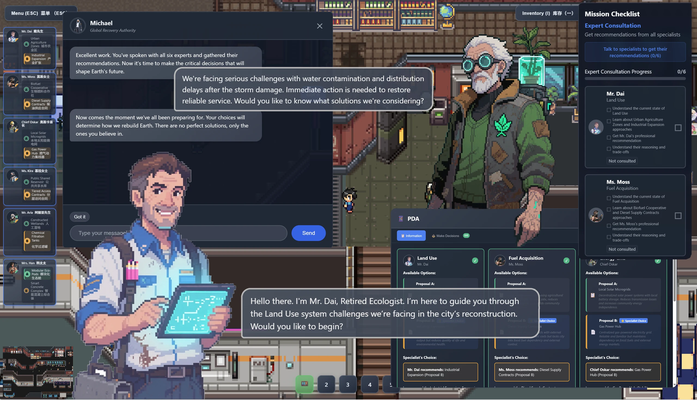
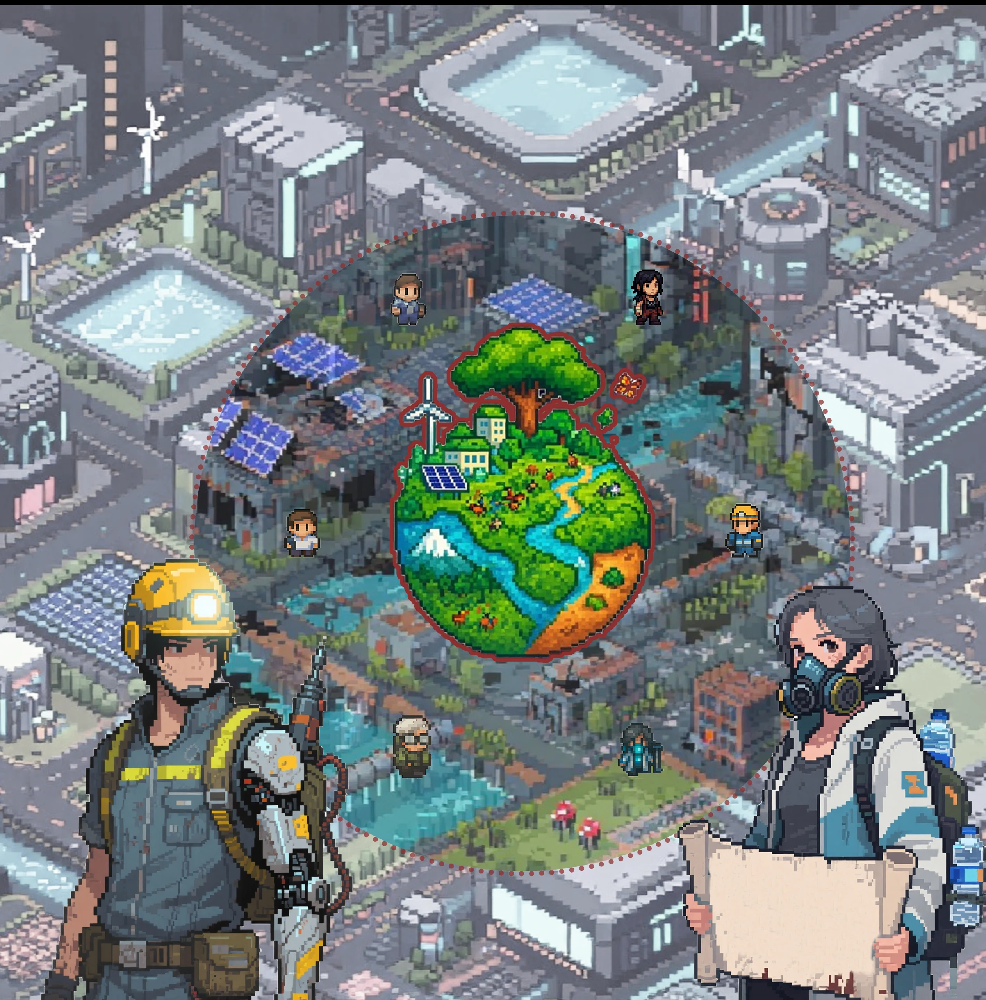

Multi-Agent Influence in Social Navigation
A narrative game that uses multi-agent social dynamics to explore how emotional expressions and group consensus shape sustainable decision-making.
Abstract
Promoting sustainable behaviors is challenging because sustainability feels distant from people's immediate goals...
Project Overview
This project investigates how emotional expressions shape group behavior and individual decision-making in multi-agent social navigation tasks.
Methodology
To explore how group attitudes influence sustainability-related decision-making, we designed the game EarthSeed.
The core mechanic involves multiple rounds of dialogue with non-player characters (NPCs).
Key Findings
In-game behavior: Players in the Sustainable Majority group made significantly more sustainable choices.
Real-world intentions: The game increased players' intention to take sustainable actions.
Cognition and emotion: Players could cognitively distinguish between the virtual and real worlds yet still emotionally and intellectually accepted the views of AI agents.
Gallery
Gameplay flow, in-game interaction, outcome states, and final demo footage from the multi-agent narrative study.



